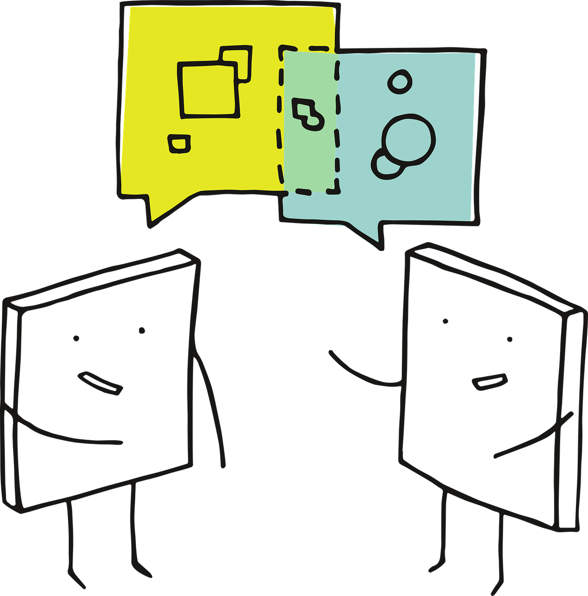
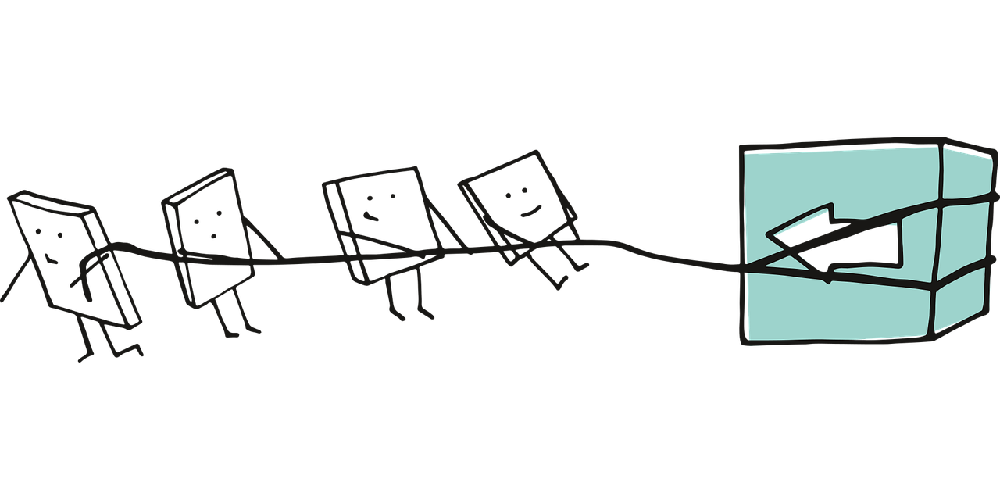

2 Basic Cuisine: A Review on Probability and Frequentist Statistical Inference
This chapter will delve into probability and frequentist statistical inference. We can view these sections as a quick review of introductory probability and statistics concepts. Moreover, this review will be important to understanding the philosophy of modelling parameter estimation as outlined in Section 1.2.5. Then, we will pave the way to the rationale behind statistical inference in the results stage (as in Section 1.2.7) in our workflow from Figure 1.1. Note that we aim to explain all these statistical and probabilistic concepts in the most possible practical way via a made-up case study throughout this chapter. Still, we will use an appropriate level of jargon and will follow the colour convention found in Appendix A along with the definition callout box.
Imagine you are an undergraduate engineering student. Moreover, last term, you just took and passed your first course in probability and statistics (inference included!) in an industrial engineering context. Moreover, as it could happen while taking an introductory course in probability and statistics, you used to feel quite overwhelmed by the large amount of jargon and formulas one had to grasp and use regularly for primary engineering fields such as quality control in a manufacturing facility. Population parameters, hypothesis testing, tests statistics, significance level, \(p\)-values, and confidence intervals (do not worry, our statistical/machine learning scheme will come in later in this review) were appearing here and there! And to your frustration, you could never find a statistical connection between all these inferential tools! Instead, you relied on mechanistic procedures when solving assignments or exam problems.
For instance, when performing hypothesis testing for a two-sample \(t\)-test, you struggled to reflect what the hypotheses were trying to indicate for the corresponding population parameter(s) or how the test statistic was related to these hypotheses. Moreover, your interpretation of the resulting \(p\)-value and/or confidence interval was purely mechanical with the inherent claim:
With a significance level \(\alpha = 0.05\), we reject (or fail to reject, if that is the case!) the null hypothesis given that…
Truthfully, this whole mechanical way of doing statistics is not ideal in a teaching, research or industry environment. Along the same lines, the above situation should also not happen when we learn key statistical topics for the very first time as undergraduate students. That is why we will investigate a more intuitive way of viewing probability and its crucial role in statistical inference. This matter will help us deliver more coherent storytelling (as in Section 1.2.8) when presenting our results in practice during any regression analysis to our peers or stakeholders. Note that the role of probability also extends to model training (as in Section 1.2.5) when it comes to supervised learning and not just regarding statistical inference.
Having said all this, it is time to introduce a statement that is key when teaching hypothesis testing in an introductory statistical inference course:
In statistical inference, everything always boils down to randomness and how we can control it!
That is quite a bold statement! Nonetheless, once one starts teaching statistical topics to audiences not entirely familiar with the usual field jargon, the idea of randomness always persists across many different tools. And, of course, regression analysis is not an exception at all since it also involves inference on population parameters of interest! This is why we have allocated this section in the textbook to explain core probabilistic and inferential concepts to pave the way to its role in regression analysis.
Heads-up on why we mean as a non-ideal mechanical analysis!
The reader might need clarification on why the mechanical way of performing hypothesis testing is considered non-ideal, mainly when the term cookbook is used in the book’s title. The cookbook concept here actually refers to a homogenized recipe for data modelling, as seen in the workflow from Figure 1.1. However, there’s a crucial distinction between this and the non-ideal mechanical way of hypothesis testing.
On the one hand, the non-ideal mechanical way refers to the use of a tool without understanding the rationale of what this tool stands for, resulting in vacuous and standard statements that we would not be able to explain any way further, such as the statement we previously indicated:
With a significance level \(\alpha = 0.05\), we reject (or fail to reject, if that is the case!) the null hypothesis given that…
What if a stakeholder of our analysis asks us in plain words what a significance level means? Why are we phrasing our conclusion on the null hypothesis and not directly on the alternative one? As a data scientist, one should be able to explain why the whole inference process yields that statement without misleading the stakeholders’ understanding. For sure, this also implicates appropriate communication skills that cater to general audiences rather than just statistical ones.
Conversely, the data modelling workflow in Figure 1.1 involves stages that necessitate a comprehensive and precise understanding of our analysis. Progressing to the next stage without a complete grasp of the current one risks perpetuating false insights, potentially leading to faulty data storytelling of the entire analysis.
Finally, even though this book has suggested reviews related to the basics of probability via different distributions and the fundamentals of frequentist statistical inference as stated in Audience and Scope, we will retake essential concepts as follows:
- The role of random variables and probability distributions and the governance of population (or system) parameters (i.e., the so-called Greek letters we usually see in statistical inference and regression analysis). Section 2.1 will explore these topics more in detail while connecting them to the subsequent inferential terrain under a frequentist context.
- When delving into supervised learning and regression analysis, we might wonder how randomness is incorporated into model fitting (i.e., parameter estimation). That is quite a fascinating aspect, implemented via a crucial statistical tool known as maximum likelihood estimation. This tool is heavily related to the concept of loss function in supervised learning. Section 2.2 will explore these matters in more detail and how the idea of a random sample is connected to this estimation tool.
- Section 2.3 will explore the basics of hypothesis testing and its intrinsic components such as null and alternative hypotheses, type I and type II errors, test statistic, standard error, \(p\)-value, and confidence interval.
- Finally, Section 2.4 will briefly discuss the connections between supervised learning and regression analysis regarding terminology.
Without further ado, let us start with reviewing core concepts in probability via quite a tasty example.
2.1 Basics of Probability
In terms of regression analysis and its supervised learning counterpart (either on an inferential or predictive framework), probability can be viewed as the solid foundation on which more complex tools, including estimation and hypothesis testing, are built upon. Under this foundation, our data is coming from a given population or system of interest. Moreover, the population or system is assumed to be governed by parameters which, as data scientists or researchers, they are of their best interest to study. That said, the terms population and parameter will pave the way to our first statistical definitions.
Definition of population
It is a whole collection of individuals or items that share distinctive attributes. As data scientists or researchers, we are interested in studying these attributes, which we assume are governed by parameters. In practice, we must be as specific as possible when defining our given population such that we would frame our entire data modelling process since its very early stages. Examples of a population could be the following:
- Children between the ages of 5 and 10 years old in states of the American West Coast.
- Customers of musical vinyl records in the Canadian provinces of British Columbia and Alberta.
- Avocado trees grown in the Mexican state of Michoacán.
- Adult giant pandas in the Southwestern Chinese province of Sichuan.
- Mature açaí palm trees from the Brazilian Amazonian jungle.

Note that the term population could be exchanged for the term system, given that certain contexts do not particularly refer to individuals or items. Instead, these contexts could refer to processes whose attributes are also governed by parameters. Examples of a system could be the following:
- The production of cellular phones from a given model in a set of manufacturing facilities.
- The sale process in the Vancouver franchises of a well-known ice cream parlour.
- The transit cycle during rush hours on weekdays in the twelve lines of Mexico City’s subway.
Definition of parameter
It is a characteristic (numerical or even non-numerical, such as a distinctive category) that summarizes the state of our population or system of interest. Examples of a population parameter can be described as follows:
- The average weight of children between the ages of 5 and 10 years old in states of the American west coast (numerical).
- The variability in the height of the mature açaí palm trees from the Brazilian Amazonian jungle (numerical).
- The proportion of defective items in the production of cellular phones in a set of manufacturing facilities (numerical).
- The average customer waiting time to get their order in the Vancouver franchises of a well-known ice cream parlour (numerical).
- The most favourite pizza topping of vegetarian adults between the ages of 30 and 40 years old in Edmonton (non-numerical).

Note the standard mathematical notation for population parameters are Greek letters. Moreover, in practice, these population parameter(s) of interest will be unknown to the data scientist or researcher. Instead, they would use formal statistical inference to estimate them.
The parameter definition points out a crucial fact in investigating any given population or system:
Our parameter(s) of interest are usually unknown!
Given this fact, it would be pretty unfortunate and inconvenient if we eventually wanted to discover any significant insights about the population or system. Therefore, let us proceed to our so-called tasty example so we can dive into the need for statistical inference and why probability is our perfect ally in this parameter quest.
Imagine you are the owner of a large fleet of ice cream carts, around 900 to be exact. These ice cream carts operate across different parks in the following Canadian cities: Vancouver, Victoria, Edmonton, Calgary, Winnipeg, Ottawa, Toronto, and Montréal. In the past, to optimize operational costs, you decided to limit ice cream cones to only two items: vanilla and chocolate flavours, as in Figure 2.1.

Now, let us direct this whole case onto a more statistical and probabilistic field; suppose you have a well-defined overall population of interest for those above eight Canadian cities: children between 4 and 11 years old attending these parks during the Summer weekends. Of course, Summer time is coming this year, and you would like to know which ice cream cone flavour is the favourite one for this population (and by how much!). As a business owner, investigating ice cream flavour preferences would allow you to plan Summer restocks more carefully with your corresponding suppliers. Therefore, it would be essential to start collecting consumer data so the company can tackle this demand query.
Also, suppose there is a second query. For the sake of our case, we will call it a time query. As a critical component of demand planning, besides estimating which cone flavour is the most preferred one (and by how much!) for the above population of interest, the operations area is currently requiring a realistic estimation of the average waiting time from one customer to the next one in any given cart during Summer weekends. This average waiting time would allow the operations team to plan carefully how much stock each cart should have so there will not be any waste or shortage.

Note that the nature of the aforementioned time query is more related to a larger population. Therefore, we can define it as all our ice cream customers during the Summer weekends. Furthermore, this second definition would expand this query to our corresponding general ice cream customers, given the requirements of our operations team, and not all the children between 4 and 11 years old attending the parks during Summer weekends. Consequently, it is crucial to note that the nature of our queries will dictate how we define our population and our subsequent data modelling and statistical inference.
Summer time represents the most profitable season from a business perspective, thus solving these above two queries is a significant priority for your company. Hence, you decide to organize a meeting with your eight general managers (one per Canadian city). Finally, during the meeting with the general managers, it was decided to do the following:
- For the demand query, a comprehensive market study will be run on the population of interest across the eight Canadian cities right before next Summer; suppose we are currently in Spring.
- For the time query, since the operations team has not previously recorded any historical data, ALL vendor staff from 900 carts will start collecting data on the waiting time in seconds between each customer this upcoming Summer.
Surprisingly, when discussing study requirements for the marketing firm who would be in charge of it for the demand query, Vancouver’s general manager dares to state the following:
Since we’re already planning to collect consumer data on these cities, let’s mimic a census-type study to ensure we can have the MOST PRECISE results on their preferences.
On the other hand, when agreeing on the specific operations protocol to start recording waiting times for all the 900 vending carts this upcoming Summer, Ottawa’s general manager provides a comment for further statistical food for thought:
The operations protocol for recording waiting times in the 900 vending carts looks too cumbersome to implement straightforwardly this upcoming Summer. Why don’t we select A SMALLER GROUP of ice cream carts across the eight cities to have a more efficient process implementation that would allow us to optimize operational costs?
Bingo! Ottawa’s general manager just nailed the probabilistic way of making inference on our population parameter of interest for the time query. Indeed, their comment was primarily framed from a business perspective of optimizing operational costs. Still, this fact does not take away a crucial insight on which statistical inference is built: a random sample ( as in its corresponding definition). As for Vancouver’s general manager, ironically, their statement is NOT PRECISE at all! Mimicking a census-type study might not be the most optimal decision for the demand query given the time constraint and the potential size of its target population.
Realistically, there is no cheap and efficient way to conduct a census-type study for any of the two queries!
Moving on to one of the core topics in this chapter, we can state that probability is viewed as the language to decode random phenomena that occur in any given population or system of interest. In our example, we have two random phenomena:
- For the demand query, a phenomenon can be represented by the preferred ice cream cone flavour of any randomly selected child between 4 and 11 years old attending the parks of the above eight Canadian cities during the Summer weekends.
- Regarding the time query, a phenomenon of this kind can be represented by any randomly recorded waiting time between two customers during a Summer weekend in any of the above eight Canadian cities.
Hence, let us finally define what we mean by probability along with the inherent concept of sample space.
Definition of probability
Let \(A\) be an event of interest in a random phenomenon, in a population or system of interest, whose all possible outcomes belong to a given sample space \(S\). Generally, the probability for this event \(A\) happening can be mathematically depicted as \(P(A)\). Moreover, suppose we observe the random phenomenon \(n\) times such as we were running some class of experiment, then \(P(A)\) is defined as the following ratio:
\[ P(A) = \frac{\text{Number of times event $A$ is observed}}{n}, \tag{2.1}\]
as the \(n\) times we observe the random phenomenon goes to infinity.
Equation 2.1 will always put \(P(A)\) in the following numerical range:
\[ 0 \leq P(A) \leq 1. \]
Definition of sample space
Let \(A\) be an event of interest in a random phenomenon in a population or system of interest. The sample space \(S\) of event \(A\) denotes the set of all the possible random outcomes we might encounter every time we randomly observe \(A\) such as we were running some class of experiment.
Note each of these outcomes has a determined probability associated with them. If we add up all these probabilities, the probability of the sample space \(S\) will be one, i.e.,
\[ P(S) = 1. \tag{2.2}\]
Note the definition of the probability for an event \(A\) in the definition of probability specifically highlights the following:
… as the \(n\) times we observe the random phenomenon goes to infinity.
The “infinity” term is key when it comes to understanding the philosophy behind the frequentist school of statistical thinking in contrast to its Bayesian counterpart. In general, the frequentist way of practicing statistics in terms of probability and inference is the approach we usually learn in introductory courses, more specifically when it comes to hypothesis testing and confidence intervals which will be explored in Section 2.3. That said, the Bayesian approach is another way of practicing statistical inference. Its philosophy differs in what information is used to infer our population parameters of interest. Below, we briefly define both schools of thinking.
Definition of frequentist statistics
This statistical school of thinking heavily relies on the frequency of events to estimate specific parameters of interest in a population or system. This frequency of events is reflected in the repetition of \(n\) experiments involving a random phenomenon within this population or system.
Under the umbrella of this approach, we assume that our governing parameters are fixed. Note that, within the philosophy of this school of thinking, we can only make precise and accurate predictions as long as we repeat our \(n\) experiments as many times as possible, i.e.,
\[ n \rightarrow \infty. \]
Definition of Bayesian statistics
This statistical school of thinking also relies on the frequency of events to estimate specific parameters of interest in a population or system. Nevertheless, unlike frequentist statistics, Bayesian statisticians use prior knowledge on the population parameters to update their estimations on them along with the current evidence they can gather. This evidence is in the form of the repetition of \(n\) experiments involving a random phenomenon. All these ingredients allow Bayesian statisticians to make inference by conducting appropriate hypothesis testings, which are designed differently from their mainstream frequentist counterpart.
Under the umbrella of this approach, we assume that our governing parameters are random; i.e., they have their own sample space and probabilities associated to their corresponding outcomes. The statistical process of inference is heavily backed up by probability theory mostly in the form of the Bayes theorem (named after Reverend Thomas Bayes, an English statistician from the 18th century). This theorem uses our current evidence along with our prior beliefs to deliver a posterior distribution of our random parameter(s) of interest.
Let us put the definitions for the above schools of statistical thinking into a more concrete example. We can use the demand query from our ice cream case as a starting point. More concretely, we can dig more into a standalone population parameter such as the probability that a randomly selected child between 4 and 11 years old, attending the parks of the above eight Canadian cities during the Summer weekends, prefers the chocolate-flavoured ice cream cone over the vanilla one. Think about the following two hypothetical questions:
- From a frequentist point of view, what is the estimated probability of preferring chocolate over vanilla after randomly surveying \(n = 100\) children from our population of interest?
- Using a Bayesian approach, suppose the marketing team has found ten prior market studies on similar children populations on their preferred ice cream flavour (between chocolate and vanilla). Therefore, along with our actual random survey of \(n = 100\) children from our population of interest, what is the posterior estimation of the probability of preferring chocolate over vanilla?
By comparing the above (a) and (b), we can see one characteristic in common when it comes to the estimation of the probability of preferring chocolate over vanilla: both frequentist and Bayesian rely on the gathered evidence coming from the random survey of \(n = 100\) children from our population of interest. On the one hand, the frequentist approach solely relies on observed data to estimate this single probability of preferring chocolate over vanilla. On the other hand, the Bayesian approach uses the observed data in conjunction with the prior knowledge provided by the ten estimated probabilities to deliver a whole posterior distribution (i.e., the posterior estimation) of the probability of preferring chocolate over vanilla.
Heads-up on the debate between frequentist and Bayesian statistics!
Even though most of us began our statistical journey in a frequentist framework, we might be tempted to state that a Bayesian paradigm for parameter estimation and inference is better than a frequentist one since the former only takes into account the observed evidence without the prior knowledge on our parameters of interest.

In the statistical community, there could be a fascinating debate between the pros and cons of each school of thinking. That said, it is crucial to state that no paradigm is considered wrong! Instead, using a pragmatic strategy of performing statistics according to our data science context is more convenient.
Tip on further Bayesian and frequentist insights!
Let us check the following two examples (aside from our ice cream case) to illustrate the above pragmatic way of doing things:
- Take the production of cellular phones from a given model in a set of manufacturing facilities as the context. Hence, one might find a frequentist estimation of the proportion of defective items as a quicker and more efficient way to correct any given manufacturing process. That is, we will sample products from our finalized batches and check their status (defective or non-defective, our observed evidence) to deliver a proportion estimation of defective items.
- Now, take a physician’s context. It would not make a lot of sense to study the probability that a patient develops a certain disease by only using a frequentist approach, i.e., looking at the current symptoms which account for the observed evidence. In lieu, a Bayesian approach would be more suitable to study this probability which uses the observed evidence combined with the patient’s history (i.e., the prior knowledge) to deliver our posterior belief on the disease probability.
Having said all this, it is important to reiterate that the focus of this textbook is purely frequentist in regards to data modelling in regression analysis. If you would like to explore the fundamentals of the Bayesian paradigm; Johnson, Ott, and Dogucu (2022) have developed an amazing textbook on the basic probability theory behind this school of statistical thinking along with a whole variety regression techniques including the parameter estimation rationale.
Moving along…
Casella and Berger (2024) and Soch et al. (2024)
Definition of random variable
A random variable is a function where the input values correspond to real numbers assigned to events belonging to the sample space \(S\), and whose outcome is one of these real numbers after executing a given random experiment. For instance, a random variable (and its support, i.e., real numbers) is depicted with an uppercase such that
\[Y \in \mathbb{R}.\]
Definition of discrete random variable
Let \(Y\) be a random variable whose support is \(\mathcal{Y}\). If this support \(\mathcal{Y}\) corresponds to a finite set or a countably infinite set of possible values, then \(Y\) is considered a discrete random variable.
For instance, we can encounter discrete random variables which could be classified as
- binary (i.e., a finite set of two possible values),
- categorical (either nominal or ordinal, which have a finite set of three or more possible values), or
- counts (which might have a finite set or a countably infinite set of possible values as integers).
Definition of continuous random variable
Let \(Y\) be a random variable whose support is \(\mathcal{Y}\). If this support \(\mathcal{Y}\) corresponds to an uncountably infinite set of possible values, then \(Y\) is considered a continuous random variable.
Note a continuous random variable could be
- completely unbounded (i.e., its set of possible values goes from \(-\infty\) to \(\infty\) as in \(-\infty < y < \infty\)),
- positively unbounded (i.e., its set of possible values goes from \(0\) to \(\infty\) as in \(0 \leq y < \infty\)),
- negatively unbounded (i.e., its set of possible values goes from \(-\infty\) to \(0\) as in \(-\infty < y \leq 0\)), or
- bounded between two values \(a\) and \(b\) (i.e., its set of possible values goes from \(a\) to \(b\) as in \(a \leq y \leq b\)).
Definition of probability distribution
When we set a random variable \(Y\), we also set a new set of \(v\) possible outcomes \(\mathcal{Y} = \{ y_1, \dots, y_v\}\) coming from the sample space \(S\). This new set of possible outcomes \(\mathcal{Y}\) corresponds to the range of the random variable \(Y\) (i.e., all the possible values that could be taken on once we execute a given random experiment involving \(Y\)).
That said, let us suppose we have a sample space of \(u\) elements defined as
\[ S = \{ s_1, \dots, s_u \}, \]
where each one of these elements has a probability assigned via a function \(P_S(\cdot)\) such that
\[ P(S) = \sum_{i = 1}^u P_S(s_i) = 1. \]
which has to satisfy Equation 2.2.
Then, the probability distribution of \(Y\), i.e., \(P_Y(\cdot)\) assigns a probability to each observed value \(Y = y_j\) (with \(j = 1, \dots, v\)) if and only if the outcome of the random experiment belongs to the sample space, i.e., \(s_i \in S\) (for \(i = 1, \dots, u\)) such that \(Y(s_i) = y_j\):
\[ P_Y(Y = y_j) = P \left( \left\{ s_i \in S : Y(s_i) = y_j \right\} \right). \]
Definition of probability mass function
Let \(Y\) be a discrete random variable whose support is \(\mathcal{Y}\). Moreover, suppose that \(Y\) has a probability distribution such that
\[ P_Y(Y = y) : \mathbb{R} \rightarrow [0, 1] \]
where, for all \(y \notin \mathcal{Y}\), we have
\[ P_Y(Y = y) = 0 \]
and
\[ \sum_{y \in \mathcal{Y}} P_Y(Y = y) = 1. \] Then, \(P_Y(Y = y)\) is considered a probability mass function (PMF).
Definition of probability density function
Let \(Y\) be a continuous random variable whose support is \(\mathcal{Y}\). Furthermore, consider a function \(f_Y(y)\) such that
\[ f_Y(y) : \mathbb{R} \rightarrow \mathbb{R} \]
with
\[ f_Y(y) \geq 0. \]
Then, \(f_Y(y)\) is considered a probability density function (PDF) if the probability of \(Y\) taking on a value within the range represented by the subset \(A \subset \mathcal{Y}\) is equal to
\[ P_Y(Y \in A) = \int_A f_Y(y) \mathrm{d}y \]
with
\[ \int_{\mathcal{Y}} f_Y(y) \mathrm{d}y = 1. \]
Definition of measure of central tendency
Probabilistically, a measure of central tendency is defined as a metric that identifies a central or typical value of a given probability distribution. In other words, a measure of central tendency refers to a central or typical value that a given random variable might take when we observe various realizations of this variable over a long period.

Definition of measure of uncertainty
Probabilistically, a measure of uncertainty refers to the spread of a given random variable when we observe its different realizations in the long term. Note a larger spread indicates more variability in these realizations. On the other hand, a smaller spread denotes less variability in these realizations.
Definition of expected value
Let \(Y\) be a random variable whose support is \(\mathcal{Y}\). In general, the expected value or mean \(\mathbb{E}(Y)\) of this random variable is defined as a weighted average according to its corresponding probability distribution. In other words, this measure of central tendency \(\mathbb{E}(Y)\) aims to find the middle value of this random variable by weighting all its possible values in its support \(\mathcal{Y}\) as dictated by its probability distribution.
Given the above definition, when \(Y\) is a discrete random variable whose PMF is \(P_Y(Y = y)\), then its expected value is mathematically defined as
\[ \mathbb{E}(Y) = \sum_{y \in \mathcal{Y}} y \cdot P_Y(Y = y). \tag{2.3}\]
When \(Y\) is a continuous random variable whose PDF is \(f_Y(y)\), its expected value is mathematically defined as
\[ \mathbb{E}(Y) = \int_{\mathcal{Y}} y \cdot f_Y(y) \mathrm{d}y. \tag{2.4}\]
Heads-up on the Law of the Unconscious Statistician!
The law of the unconscious statistician (LOTUS) is a particular theorem in probability theory that allows us to compute a wide variety of expected values. Let us properly define it for both discrete and continuous random variables.
Theorem 2.1 Let \(Y\) be a discrete random variable whose support is \(\mathcal{Y}\). The LOTUS indicates that the expected value of a general function \(g(Y)\) of this random variable \(Y\) can be obtained via \(g(Y)\) along with the corresponding PMF \(P_Y(y)\). Hence, the expected value of \(g(Y)\) can be obtained as
\[ \mathbb{E}\left[ g(Y) \right] = \sum_{y \in \mathcal{Y}} g(Y) \cdot P_Y(y). \tag{2.5}\]
Proof. Let us explore the rationale provided by Soch et al. (2024). Thus, we will rename the general function \(g(Y)\) as another random variable called \(Z\) such that:
\[ Z = g(Y). \tag{2.6}\]
Note this function \(g(Y)\) can take on equal values \(g(y_1), g(y_2), \dots\) coming from different observed values \(y_1, y_2, \dots\); for example, if
\[ g(y) = y^2 \]
both
\[ y_1 = 2 \quad \text{and} \quad y_2 = -2 \]
yield
\[ g(y_1) = g(y_2) = 4. \]
The above Equation 2.6 is formally called a random variable transformation from the general function of random variable \(Y\), \(g(Y)\), to a new random variable \(Z\). Having said that, when we set up a transformation of this class, there will be a support mapping from this general function \(g(Y)\) to \(Z\). This will also yield a proper PMF,
\[ P_Z(Z = z) : \mathbb{R} \rightarrow [0, 1] \quad \forall z \in \mathcal{Z}, \]
given that \(g(Y)\) is a random variable-based function.
Therefore, using the expected value definition for a discrete random variable as in Equation 2.3, we have the following for \(Z\):
\[ \mathbb{E}(Z) = \sum_{z \in \mathcal{Z}} z \cdot P_Z(Z = z). \tag{2.7}\]
Within the support \(\mathcal{Z}\), suppose that \(z_1, z_2, \dots\) are the possible different values of \(Z\) corresponding to function \(g(Y)\). Then, for the \(i\)th value \(z_i\) in this correspondence, let \(I_i\) be the collection of all \(y_j\) such that
\[ g(y_j) = z_i. \tag{2.8}\]
Now, let us tweak a bit the above expression from Equation 2.7 to include this setting:
\[ \begin{align*} \mathbb{E}(Z) &= \sum_{z \in \mathcal{Z}} z \cdot P_Z(Z = z) \\ &= \sum_{i} z_i P_{g(Y)}(Z = z_i) \\ & \qquad \text{we subset the summation to all $z_i$ with $Z = g(Y)$}\\ &= \sum_{i} z_i \sum_{j \in I_i} P_Y(Y = y_j). \\ \end{align*} \tag{2.9}\]
The last line of Equation 2.9 maps the probabilities associated to all \(z_i\) in the corresponding PMF of \(Z\), \(P_Z(\cdot)\) via the function \(g(Y)\), to the original PMF of \(Y\), \(P_Y(\cdot)\), for all those \(y_j\) contained in the collection \(I_i\). Given that certain values \(z_i\) can be obtained with more than one value \(y_j\), such as in the above example when \(g(y) = y^2\) for \(y_1 = 2\) and \(y_2 = -2\), note we have a second summation of probabilities applied to the PMF of \(Y\).
Moving along with Equation 2.9 in conjunction with Equation 2.8, we have that:
\[ \begin{align*} \mathbb{E}(Z) &= \sum_{i} z_i \sum_{j \in I_i} P_Y(Y = y_j) \\ &= \sum_{i} \sum_{j \in I_i} z_i P_Y(Y = y_j) \\ &= \sum_{i} \sum_{j \in I_i} g(y_j) P_Y(Y = y_j). \end{align*} \tag{2.10}\]
The double summation in Equation 2.10 can be summarized into a single one, given neither of the factors on the right-hand side is subindexed by \(i\). Furthermore, this standalone summation can be applied to all \(y \in \mathcal{Y}\) while getting rid of the subindex \(j\) in the factors on the right-hand side:
\[ \begin{align*} \mathbb{E}(Z) &= \sum_{i} \sum_{j \in I_i} g(y_j) P_Y(Y = y_j) \\ &= \sum_{y \in \mathcal{Y}} g(y) P_Y(Y = y) \\ &= \mathbb{E}\left[ g(Y) \right]. \end{align*} \]
Therefore, we have:
\[ \mathbb{E}\left[ g(Y) \right] = \sum_{y \in \mathcal{Y}} g(y) P_Y(Y = y). \quad \square \]
Theorem 2.2 Let \(Y\) be a continuous random variable whose support is \(\mathcal{Y}\). The LOTUS indicates that the expected value of a general function \(g(Y)\) of this random variable \(Y\) can be obtained via \(g(Y)\) along with the corresponding PDF \(f_Y(y)\). Thus, the expected value of \(g(Y)\) can be obtained as
\[ \mathbb{E}\left[ g(Y) \right] = \int_{\mathcal{Y}} g(Y) \cdot f_Y(y). \tag{2.11}\]
Proof. Suppose…
Definition of variance
The variance of a random variable is…
Either for a discrete or continuous case, the variance is defined as
\[ \text{Var}(Y) = \mathbb{E}\{[Y - \mathbb{E}(Y)]^2\}. \tag{2.12}\]
Note the expression above is equivalent to:
\[ \text{Var}(Y) = \mathbb{E}(Y^2) - [\mathbb{E}(Y)]^2. \tag{2.13}\]
Heads-up on the two mathematical expressions of the variance!
After applying some algebraic rearrangements and expected value properties, Equation 2.12 and Equation 2.13 are equivalent as follows:
Proof. \[ \begin{align*} \text{Var}(Y) &= \mathbb{E} \left\{ \left[ Y - \mathbb{E}(Y) \right]^2 \right\} \\ &= \mathbb{E} \left\{ Y^2 - 2Y \mathbb{E}(Y) + \left[ \mathbb{E}(Y) \right]^2 \right\} \\ &= \mathbb{E}(Y^2) - \mathbb{E} \left[ 2 Y \mathbb{E}(Y) \right] + \mathbb{E} \left[ \mathbb{E}(Y) \right]^2 \\ & \qquad \text{distributing the expected value operator}\\ &= \mathbb{E}(Y^2) - 2 \mathbb{E} \left[ Y \mathbb{E}(Y) \right] + \mathbb{E} \left[ \mathbb{E}(Y) \right]^2 \\ & \qquad \text{since $2$ is a constant}\\ &= \mathbb{E}(Y^2) - 2 \mathbb{E}(Y) \mathbb{E} \left( Y \right) + \left[ \mathbb{E}(Y) \right]^2 \\ & \qquad \text{since $\mathbb{E}(Y)$ is a constant}\\ &= \mathbb{E}(Y^2) - 2 \left[ \mathbb{E}(Y) \right]^2 + \left[ \mathbb{E}(Y) \right]^2 \\ &= \mathbb{E}(Y^2) - [\mathbb{E}(Y)]^2. \qquad \qquad \qquad \qquad \qquad \square \end{align*} \]
Definition of generative model
A generative model is
Definition of random sample
A random sample is a collection of random variables
Definition of conditional probability
We define conditional probability
Definition of independence
We define probabilistic independence
2.2 What is Maximum Likelihood Estimation?
2.3 Basics of Frequentist Statistical Inference
Definition of hypothesis testing
A frequentist hypothesis testing is
Definition of null hypothesis
A null hypothesis is
Definition of alternative hypothesis
An alternative hypothesis is
Definition of type I error
Type I error is defined as
Definition of type II error
Type II error is defined as
Definition of significance level
Significance level is defined as
Definition of power
The statistical power of a test is defined as
Definition of observed effect
An observed effect is
Definition of standard error
An standard error is
Definition of test statistic
A test statistic is
Definition of critical value
A critical value is
Definition of \(p\)-value
A \(p\)-value is
Definition of confidence interval
A confidence interval is